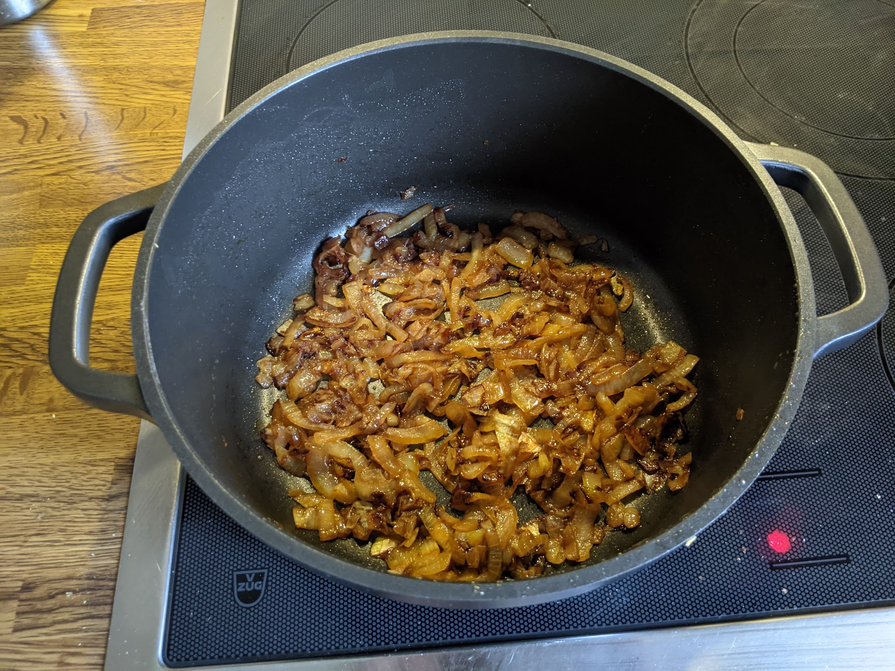

Oignons caramélisés

Des oignons pas mal caramélisés, mais on pourrait encore les faire brunir
Pour un petit bol d'oignons caramélisés :
- Deux gros oignons (blancs ou jaunes)
- Huile d'olive
- Éplucher et couper les oignons en lamelles.
- Les faire revenir dans un peu d'huile d'olive à feu moyen-fort, dans une poêle, jusqu'à ce qu'ils deviennent translucides.
- Continuer à faire cuire jusqu'à ce qu'une partie des oignons brunisse. Dès qu'on a l'impression que ça va bientôt trop cuire (le fond paraît sec, ça fait des bruits suspicieux), ajouter un trait de verre d'eau (ou de vin blanc, ou de bouillon de légumes), et bien mélanger.
- Continuer le processus jusqu'à ce que tout ait une couleur bien brune (presque marron) et uniforme. Ça prend minimum une demi-heure, plus si on veut vraiment les caraméliser bien de partout. Pas besoin de mélanger en permanence, mais il faut bien surveiller pour éviter que ça ne carbonise.
Remarque : quand c'est la première fois qu'on fait des oignons confits, c'est une bonne idée de faire ça à feu doux ou moyen-doux ; ça va beaucoup moins vite mais ça diminue grandement les chances que ça cuise trop.